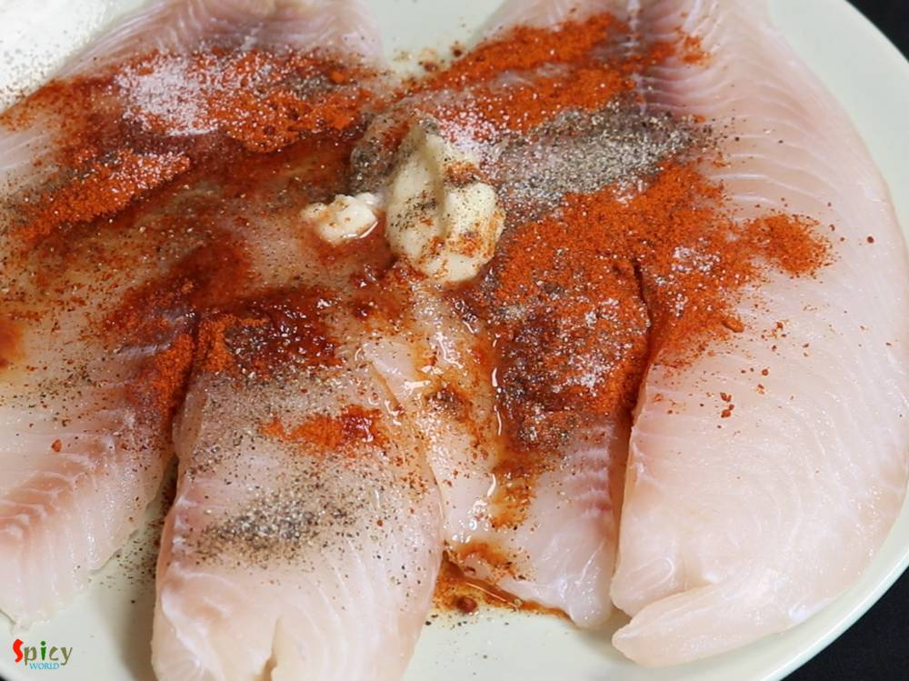
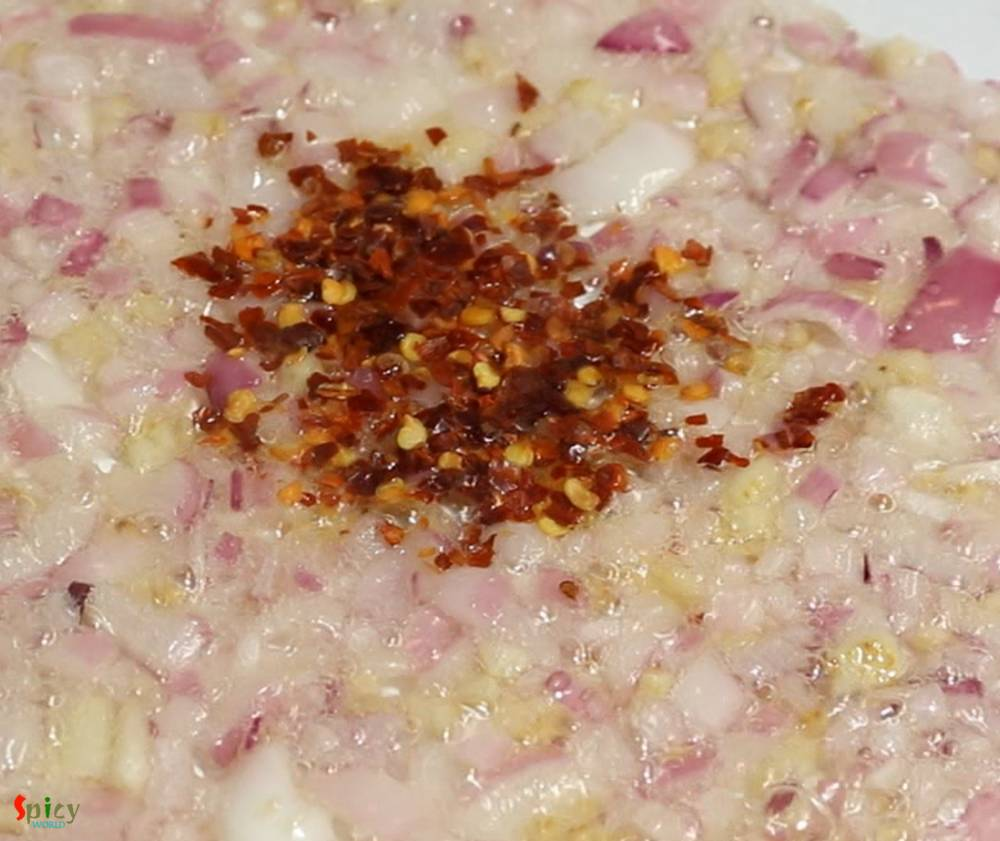
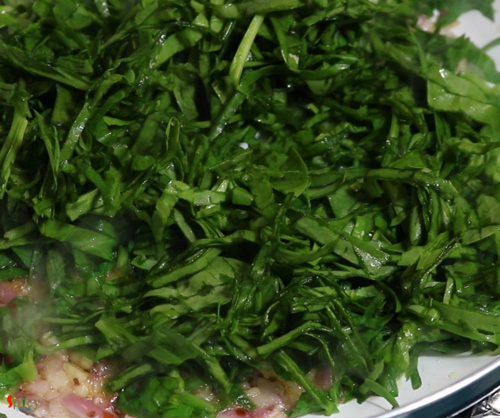
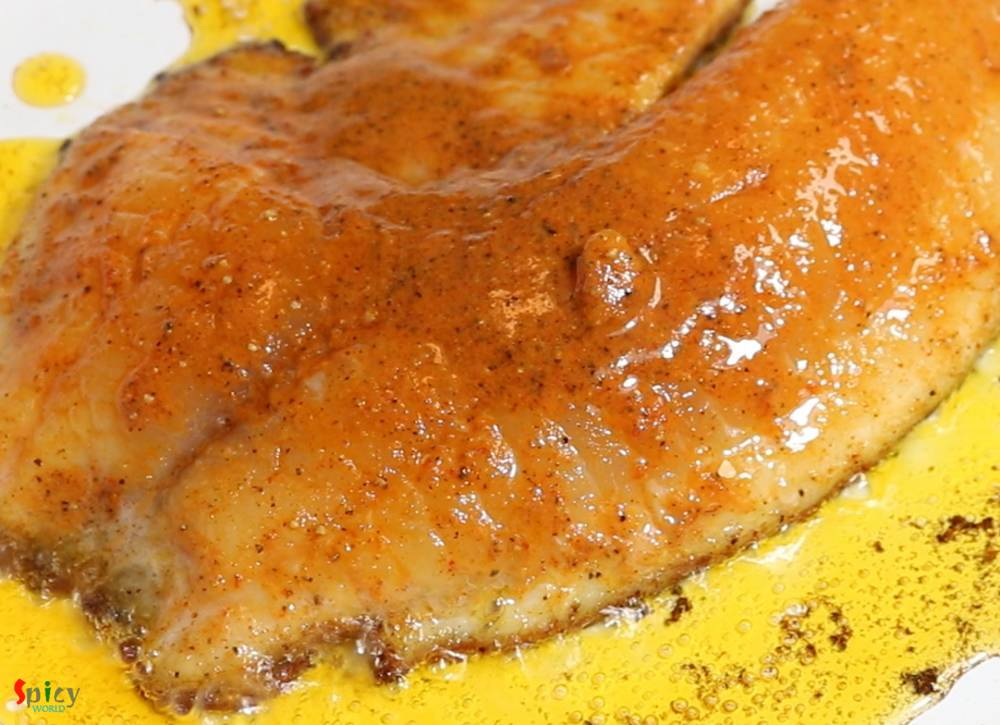
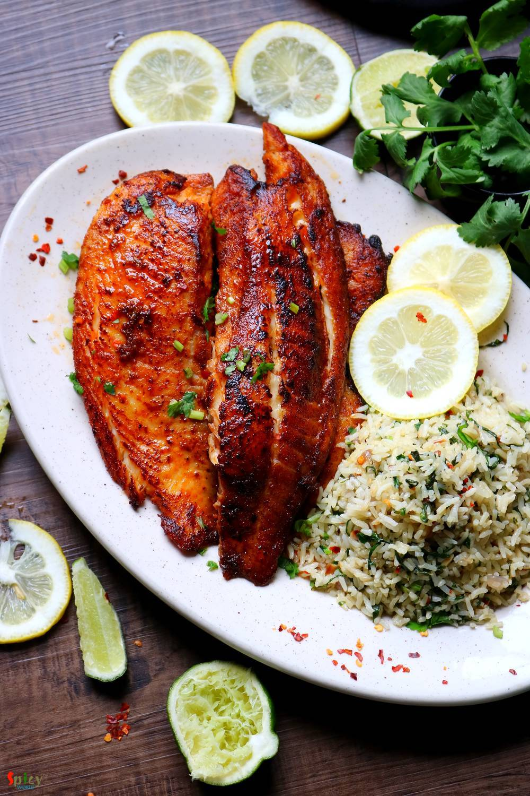
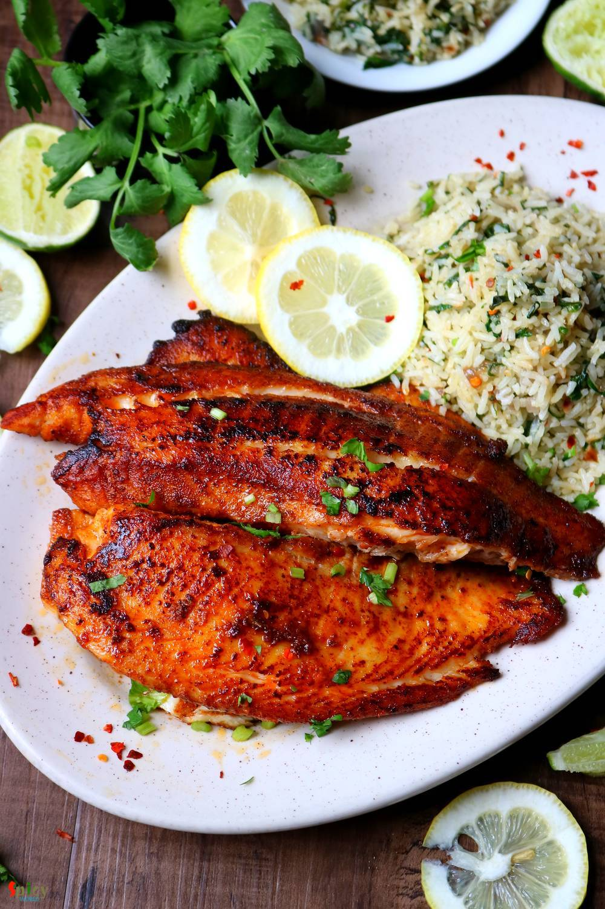

Simple and Easy Recipes
Previous Post
Grilled Fish & Spinach Rice
© 2016 Spicy World, Published on: May 24, 2019
During summer everybody wants to spend less time in kitchen. Usually I make daal, curry or some veggie stir fried for lunch but the hot, humid weather of Texas is pushing me to cook short and simple meal. Well, how can I not cook something special on weekend? You don't have to stand more than 20 minutes in front of those hot burners to creat this awesome Grilled fish and Spinach rice platter. To make it more easy try to cook the rice on previous day and refrigerate it. Then all you have to do is just marinate and cook the fish and stir fried the rice. Try this recipe in your kitchen and let me know how it turned out for you.

Ingredients
- 2-3 thick fillets of Tilapia / Swai / Basa / Salmon.
- 1 Tablespoon of ginger garlic paste.
- Salt as per your taste.
- 1 Teaspoon of black pepper powder.
- 1 Teaspoon of red chili powder.
- 2 Teaspoons of Tandoori masala powder or Cajun seasonings.
- 2 Teaspoons of lemon juice.
- 5 Tablespoons of cooking oil.
- 1 Tablespoon of butter.
- 2 big cloves of garlic, finely chopped.
- 1 Teaspoon of chili flakes.
- Half of a onion, finely chopped.
- 2 cups of fresh spinach leaves, finely chopped.
- Some chopped coriander leaves.
- A pinch of sugar.
- 3 cups of precooked and cold rice.


Steps
Marinate the fish fillets with ginger garlic paste, salt, pepper powder, red chili powder, tandoori masala powder or cajun seasonings and lemon juice.
Mix well and keep in refrigerator for 2 hours.
In the mean time, heat 2 Tablespoons of oil and 1 Tablespoon of butter in a pan.
Saute chopped garlic for few seconds.
Then add chopped onion, fry for 3-4 minutes.
Add the chili flakes. Mix well for a minute.
Next add chopped spinach leaves. Cook on high flame for 5 minutes.
Spinach will become half of its quantity. Fry them well.
Then add cooked rice, some salt and pinch of sugar. Mix well and fry for 5 minutes on medium flame.
Lastly add chopped coriander leaves and turn off the heat.
For the fish heat 2 Tablespoons of oil in a non stick pan.
Make the oil very hot.
Now add the fillets and fry on medium flame for 2-3 minutes each side.
Do not cook long otherwise the fish will become chewy.
Remove them from pan and serve hot with the rice and lemon wedges.
YourGrilled Fish & Spinach rice is ready to serve.
Serve this hot with any type of drinks ...
")
Previous Post